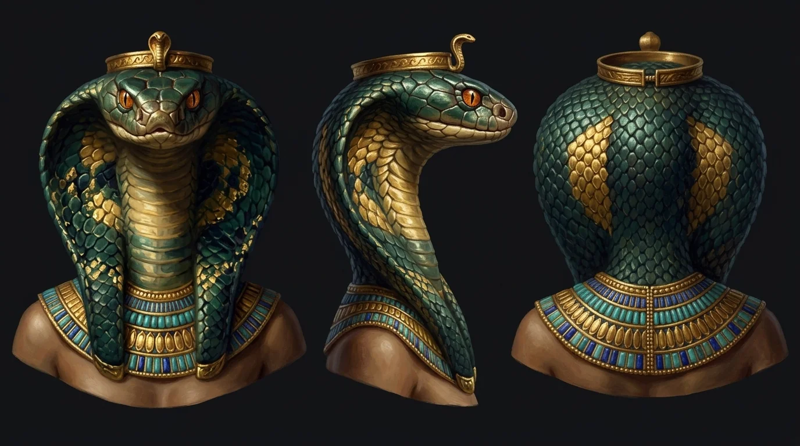
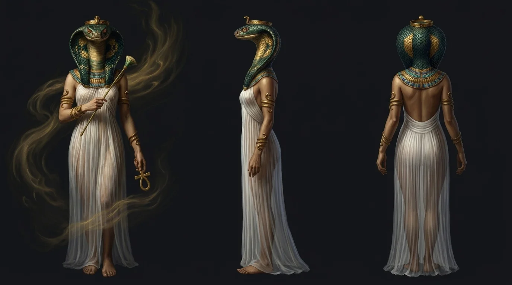

Sinopsis Mitológica:
Mucho antes de que existieran las arenas de Egipto o el fuego del sol de Ra, en el océano negro de Nun reinaba la Ogdóada de Hermópolis. Entre las ocho fuerzas primordiales se alzaba Amaunet, «La Oculta», la diosa cobra que custodiaba el aliento invisible capaz de agitar el abismo y alumbrar el loto de la creación.
⚡ M0001
Cosmogonía Egipcia (Mitología Egipcia
• 871 palabras • 05:16 min narración
Amaunet: La Madre del Viento Invisible ⚡ Cosmogonía (Egipto)
00:00
Ver en YouTube ↗
I. El Abismo de Hermópolis y el Nombre de «La Oculta»
El océano primordial Nun antes del tiempo y las ocho deidades de la Ogdóada.
01:10
Ver en YouTube ↗
II. El Aliento de la Vida y la Madre de los Faraones
Amaunet como soplo vital que recorre las aguas y ampara a los reyes en Lúxor.
02:15
Ver en YouTube ↗
III. La Sombra del Vacío y el Destierro en Tebas
El temor al vacío, la cabeza de cobra implacable y su sustitución política por la diosa Mut.
03:26
Ver en YouTube ↗
IV. El Primer Suspiro y el Nacimiento del Sol
Amaunet agita las aguas de Nun y hace emerger la Colina de las Llamas y el loto solar.
04:37
Ver en YouTube ↗
V. El Eco Eterno entre las Columnas de Lúxor
El retiro bajo Medinet Habu y el viento invisible que aún susurra en los templos del Nilo.


Amaunet
Diosa Primordial de lo OcultoIconografía: Cuerpo esbelto de mujer en lino blanco transparente, cabeza de cobra real con escamas verde esmeralda y oro, ojos de ámbar, diadema uraeus, collar usekh, cetro de papiro y anj dorado.
🇪🇸 España (Álvaro)Vídeo 5m + Short
🌎 Latinoamérica (Alonso)Vídeo 5m + Short
🇺🇸 Inglés (Christopher)Vídeo 5m + Short
🇧🇷 Portugués (Antonio)Vídeo 5m + Short
🇩🇪 Alemán (Killian)Vídeo 5m + Short